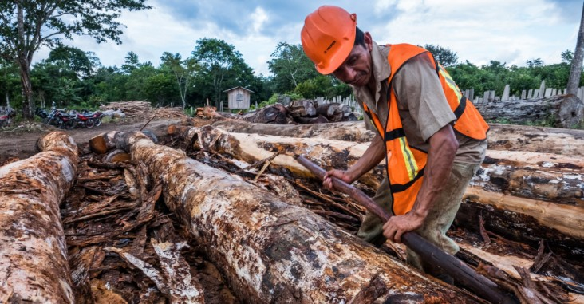

Незаконната сеч е изсичането, преработката, транспортирането, закупуването или продажбата на дървен материал в противоречие с националните и международните закони. Има опустошително въздействие върху някои от най-ценните останали гори в света и върху хората, които живеят в тях и разчитат на ресурсите, които горите предоставят.
Екологичните ефекти от незаконната сеч включват обезлесяване, загуба на биологично разнообразие и емисии на парникови газове. Незаконната сеч е допринесла за конфликти с коренното и местното население, насилие, нарушения на човешките права, корупция, финансиране на въоръжени конфликти и влошаване на бедността.
Засадете дърво, където можете. Отидете без хартия у дома и в офиса. Купете рециклирани продукти и след това ги рециклирайте отново. Купете сертифицирани изделия от дърво. Прочетете етикетите и потърсете маркировката FSC . Подкрепете продуктите на компании, които се ангажират с намаляване на обезлесяването.
Всяка година биват изсичани около 15 милиарда дървета.